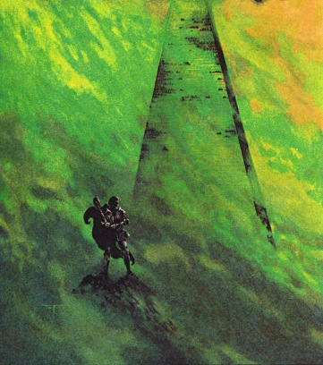

Inside the Crown
by
Robin Wyatt Dunn
Translator's Note:
This document was retrieved from a psychoneumic broadcast received after the latest attacks on Redoubt One, Levels Fourteen through Nine. I have done my best to render the thoughts of the abhuman narrator in prose sensible to us — this of course is never an easy prospect. Without getting into a discussion of politics since this is not the place for it, allow me to say that I believe the narrator was once human, and that his record here is honest to the degree he is capable of being so.
I have rendered a term, which in the original recording can be transcribed as "kogonn," as "Furnace." From context it seems clear that this term names his point of origin, a dimension near to our own.
Be assured that even now countermeasures are being enacted to seal this dimensional gap, and known collaborators with this narrator are being interrogated even as you read this.
The Redoubt will not fall.
One additional note: I have left in repeated references to "Chowder," the word in the original is "chowhat" — interestingly, this is dialect which is known to be used on Levels Two and Three, where certain forms of cannibalism are legally permitted. Though my superiors may name me a blasphemer for including it here, I have left the term in context, where the narrator replaces our liturgical words "True Broth" (referring of course to our holy daily soup with its guaranteed meat quotient) with the term "Chowder." If the narrator was in fact born in the Redoubt — and I do believe this — it seems likely he was raised a cannibal.
Inside the Crown, is the weapon. I think it knows my name now. I'm not certain, but it glows brighter when I pass it; when it sees that I have been loyal to it.
I spent a great many years on these levels as an adolescent. Even as you hear these words, so is our victory over you assured. Many of you have forgotten the devil's deal you made with the Crown, when you allowed it to stimulate and order Broca's area, where language is born. Doing so made the Crown your greatest weakness, as it forced your words to become stagnant, and surrendered your cognition to an unfeeling machine. For these and a billion other reasons, you will be destroyed.
I must find my ancestor. I know that he died here, and was buried, here beneath the dictionary chambers. It is a large dictionary, with many floors. There are many Human Words in it too, like statues, men and women who have devoted their souls to the lexicographers; their grimaces and groans are really quite interesting — if you've never been, it is worth a visit.
The darkness outside is a part of my own tragedy, I think, for I let the darkness within too.
"Sieur?"
"Yes, child."
"The robots need your blood."
"Here." I cut my finger and put a drop onto his pan. The boy, the lexicographers' servant, smiled his odd smile and took my fluid to the robots, behind the welcome desk.
In truth I have only just arrived, but these new gates are strange even to me, a veteran traveler. I look and feel mostly the same, but it does affect one's memories . . .
I went below the basement, and climbed down the stairs, the lights in the walls politely inquiring after my desired level of illumination as I descended.
"Near darkness," I whispered.
"Yes . . ." The lights dimmed.
My name is Remnant; I come from the Furnace. Unlike many of my brethren, I do not eat flesh, preferring the air of climes like those here. My body has many hidden lungs. Sometimes I remember being a man from before — same as the shape I have taken now, on this side of the Gate — but other times I prefer to forget.
The lights brighten over one of the crèches. My ancestor. He has been well preserved.
"Ancestor," I say. "Father."
His eyes flicker open, their rainbow irises swirling. "Son," he grates. "You remembered."
"You're looking well, Father," I say.
"I am dead." He laughed then, a sound I will not describe. The Dictionary around us laughed with him somehow, and though I am a traveler I felt the quaking fear come back, the fear that is my blood, that is my drink, that is my sustenance — it almost overtook me.
"You're mostly dead, yes, Father. But alive too. Are you ready?"
"I want to stay here." He smiled behind the glass. Some of his flesh had begun to pulsate.
I realized then that it was the time for Retribution, some annoying ceremony native to these levels I never understood, as then the shuddering walls threw their spindles into my joints, forcing me to bow, and Father closed his eyes, smiling, nodding his dead head in time to the rhythmic announcements coursing through our ear drums.
Chowder is a food
Chowder is power
Chowder is a power
Chowder is a food
"Father?" I remained kneeling but I felt the need to hear his voice; I could not remember the proper obeisances for this ritual, whatever it was; I had been inhuman for a long time.
"Father?"
"Wait till it's done," he grated. "It finishes eventually."
Chowder is blood.
Chowder is directional.
Wink your eye when you align to the arcsecond moment of the food —
Then it was silent. And I could hear Father laughing.
I must tell you one thing about my New People. We Who Will Brighten the Land. We Who Will Make Voice in the Silence.
We are new, and broad. It is our breadth, you see, that is important, because we can scan more arrays that your cities can, than your oceans can, than your lives can. We are assembling workable simulacra of these scans into Gates, one of which I passed through.
In the scan is a moment — a weapon, a knife. Sharp, like blood. A music fells my voice and I am their star — I am their star forever —
No. I must not give in to my poetry now. Our people will come later. Now, I need Father.
"Up Father!"
I lift the corpse from his vestibule and he vomits beetles onto the stone beneath our feet, beetles that scream and cry as I crush them beneath my boots.
His eyes swirl their rainbows and I kiss his cheek.
"Up we go."
"Boy!"
"Sieur, corpses are not permitted on this level."
"This is my Father, boy! Get us a chair! And some tea!"
"I must get the Adjutant."
"Yes, fine, but tea first. My father is tired. He has been dead a long time."
"Did you revive him, sieur?"
"Tea!"
"Yes, yes sir."
The boy moved away slowly, smiling again. I enjoy someone with a sense of humor.
"Here, Father, I'll get a chair for you."
"Bahhhhhh!" he said.
"Here."
I approached one of the Human Words, perhaps it was "Illustration" for she was drawing pictures in her forearm with a knife, her face huge and bulbous with infection.
"You don't need the chair, do you?"
Minutely, she shook her head.
"Thank you, dear."
I put it behind my Father and shoved him gently backwards; he fell into the well-cushioned chair in a cloud of dust and mold; I sneezed.
"So," he said, light from the walls swirling in the dust around his face, "you still have a throat. And a nose!"
"Yes," I said, sitting on the floor beside his chair, and looking up at him as though I were the picture of filial loyalty.
"You didn't get a voicebox installed?" he croaked.
"I've been away, Father. Do you remember?"
"You betrayed me," he said, smiling. "You went outside without consulting the committees. You didn't even bring any rope. You betrayed all of us . . ."
"It's not that simple, Father. Your morality is so primitive! I suppose it's beautiful, but I hate it. I hate it more than I hate your diseased face . . ."
He grinned again, and coughed up an insect. The boy came, holding a tray made out of bread. I took my cup but then my Father grabbed the tray, the second cup spilling into his lap, and he began to gnaw at it, masticating the ancient bread between his yellow-black teeth, his rainbow eyes growing in size, his mouth making a deep and honorable sound, of hunger, hunger, hunger.
"I'm sorry, young man, my father hasn't eaten for a while."
The boy looked at me. He had a good poker face.
"The Adjutant is coming," he said.
Inside the Crown, is the weapon. Like the cover of the dictionary, or the neo-cortex which gives apes their judgment, the Crown covers the nest of Human Words, caught in their necessary fixed poses and pains, and makes their efforts whole. I knew of it before I left, but now We Who Will Brighten the Land have a special interest not only in its algorithms and historical structures but too in its interior, the real weapon.
I do not fear making the human flesh here nuclear. It will start the engine that we need.
"Adjutant!" said the boy, bowing low, as the official approached. My Father growled in his chair. I stood, and offered my hand.
The Adjutant kissed it.
"You are Visitor here," he said, "and welcome to you."
"He stole this body!" said the boy, pointing at my Father.
"Did you do that?" said the Adjutant.
"Sieur," I said, "Do you believe that the time of the Redoubt's crumbling is close?"
The Adjutant's smile faltered a little but stayed on his face still, and he said, "Yes. Yes, I do."
"Please," I said, "meet my father. His name used to be Rudulpho, but now I will call him Ember, even as I am Remnant. I am bringing him to The Furnace."
"The Furnace does not exist," hissed the Adjutant, his ruffled coat expanding to match the extremity of his emotion. "It will never exist."
"I assure you it does, and it will, and I am bringing my Father to it, not far from the Redoubt, and within sight of the Tower, in fact, though it moves . . ."
The boy watched me with wide eyes.
"Tell me, Adjutant, would you mind if I brought this boy with me?"
"The committee will hear of this," he muttered, and he staggered off, as though drunk, perhaps, or drunk with fear.
"Will I die, sieur?" the boy said, his eyes liquid, and sad.
"We all die, boy. The question is when."
In truth I had lied to the Adjutant. The Furnace was not yet visible to the City or its Tower; the Redoubt might still be able to muster a defense if it were seen and so I and mine, We Who Bring Holy Brightness Here into Hell, we found it prudent to conceal the Furnace Gate with a guardian, one we found in last year's scanning.
If we can penetrate the Crown, we can find the meaning of the structure of your artificial language. All your lies will come bursting out. And now, I know the Crown's precise location.
I spoke the passwords into the speakers and the airlock opened onto the morass. I dragged the boy and the corpse of my Father through after me.
"I never gave you that passcode," my Father grated.
"You never gave me life either, Father. The Furnace did that."
We trucked through the waste, mud on our boots. Some of the lights from the Tower moved over us as we walked, and for a moment I saw some of the devilled creepers, orange and white whirring near the boy's head, feeling his warmth.
"I knew you would betray me."
"Yes, Father."
"Where are we going?" said the boy.
"To the Gate."
"Will it hurt?" said the boy.
After a day's walk, in which my father stumbled only a few times (the corpse held up well), we approached a part of the infinite darkness I could smell as being different: the guardian.
"Why are we not attacked?" said Father.
"Shhh, Father. I have to talk to a friend now."
I sensed Father leaning closer to the boy; he must have been staring at the child with his rainbowed eyes, although I could not see.
"Friend?" I called out, and heard a rumble in response.
I seized the boy then, and threw him into the hot maw of the guardian. As I did so, I remembered one of my early meals as a boy, and its heady smell, and then the eyes of Father when he first accepted his new brain . . . I heard the huge sounds of the guardian eating. Father screamed in horror; I was surprised he could still muster such emotion at his age. Near us some of the many hungry things electrified the air, moving I'm sure only millimeters from our flesh, but they would not touch us; not while under the Furnace's protection.
We listened to the boy's screams, and finally, his death. Then the Gate opened, and green light shone over the plain.
"No . . ." said Father, but I held him tightly and marched into the light.
Things are different here. I'm sure you may have guessed. Now Father is one of us. Ask yourself: why is the Redoubt not seeking to restart a sun within useful distance of your planet? Why were we of the Furnace rebuffed on our first approach? Why are all who come to us not permitted to return to you?
"I have the location of the Crown. Inside is the weapon we need," I told my superiors, my comrades in arms. Their light moved through some of my perceptions, as we waver here over a vast sea.
I am the instrument. And I am the match. I am the lair, and I am the hatch, to open up, and throw them in . . .
God I await thy face —
We opened the Gate again, the location plucked from my brain, and transmitted the signal into the Night Land.
Language obeys orders beyond your understanding: for every phoneme, there is a thread in the universe's weaving. And if you tug one of these threads out . . .
I felt but could not see the psychic earthquake in the sky, above the Redoubt, near the cortex of the Dictionary and its Human Words.
One of the Tower's domes shattered, and light spurted into the skies.
"We're getting it! We're getting it!" I whispered to my cousins, warm here in The Furnace that Will Revivify.
But all I heard was the Redoubt's ludicrous damned religious dogma, broadcast now at ear-rupturing volumes:
Chowder is Menace!
Chowder is Heat!
Drink the Chowder,
For the Beat!
Of our Drum!
I do not know how I failed.
"You were always a failure, son."
"Shut up, Father."
"You think a cult alone can destroy the Redoubt?" he whispered in our infinite space, even now retaining some aspect of his rainbow eyes.
"Do you want me to kill you again?" I screamed.
But he only laughed, his face a fire, here where there are no longer any words.
©2013 by Robin Wyatt Dunn.
Image copyright by Stephen Fabian.